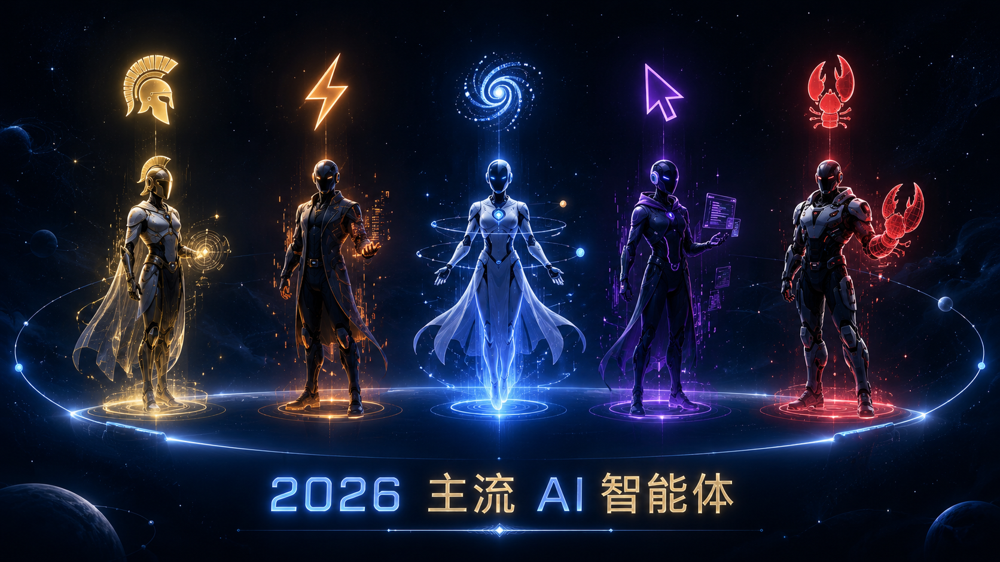
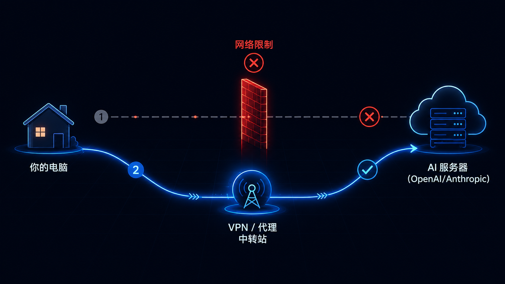
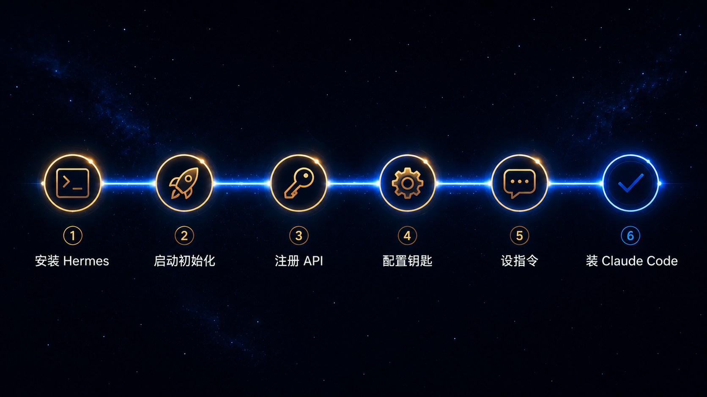
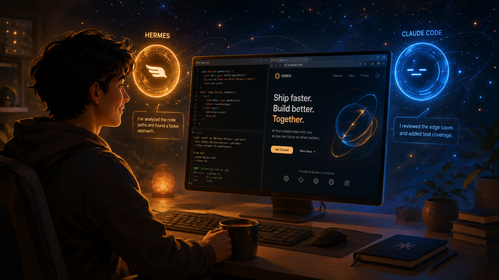

大模型只能聊天。智能体能动手干活。
30 分钟，从零装一个真正属于你的 AI 助手。
不会写代码？也行。
CHAPTER 01
你可能已经用过 ChatGPT、DeepSeek、Kimi。它们很聪明，但只能聊天——你问它答，仅此而已。
智能体（Agent）不一样。它能自己动手：跑命令、装软件、改文件、写代码、部署项目。你说一句，它就干。
左：大模型只能聊天回复 · 右：智能体能动手执行任务
CHAPTER 02
2025-2026 年，AI 智能体井喷。下面是最主流的几个，各有侧重。

2026 主流 AI 智能体生态
哪个最适合你？
| 智能体 | 价格 | 中文 | 换模型 | 多平台 | 难度 | 推荐度 |
|---|---|---|---|---|---|---|
| Hermes ⚡ | 免费 | ✓ | ✓ 任意 | ✓ 终端/微信/飞书/TG | ⭐ 简单 | ⭐⭐⭐⭐⭐ |
| Claude Code | 按量付费 | ✓ | ✗ 仅Claude | 终端 | ⭐⭐ 中等 | ⭐⭐⭐⭐ |
| Codex | $200/月 | ✓ | ✗ 仅OpenAI | 云端 | ⭐⭐ 中等 | ⭐⭐⭐ |
| Cursor Agent | $20/月 | ✓ | 部分 | 桌面IDE | ⭐ 简单 | ⭐⭐⭐⭐ |
| OpenClaw | 免费 | ✓ | ✓ | 桌面 | ⭐⭐⭐ 较难 | ⭐⭐⭐ |
CHAPTER 03
不是因为它最厉害，是因为它最适合新手起步。
CHAPTER 04
用国外 AI 服务，有时候需要"特殊的网络工具"。搞清楚是什么、为什么需要、怎么弄。

直连被拦截 → 通过VPN/代理中转 → 成功访问AI服务器
虽然国产 API 够用，但有些场景你还是会需要：
这里不提供具体工具，但告诉你思路：
搜索引擎搜"机场推荐 2026"，找评价好、稳定的服务。付费的比免费的稳定得多。月费大概 15-30 元。选的时候注意：要支持 Clash 或 V2Ray 协议的。
Windows：下载 Clash Verge（GitHub 上搜）
Mac：下载 ClashX Pro
iPhone：下载 Shadowrocket（小火箭，美区 App Store，$2.99）
Android：下载 v2rayNG（Google Play 或 GitHub）
机场会给你一个订阅链接。在客户端里粘贴导入，选一个节点，开启代理。
测试：打开浏览器访问 google.com，能打开就成功了。
开了代理后，终端默认不走代理。需要设置环境变量：
7897 是 Clash Verge 默认端口，不同客户端可能不同。设置后终端里就能访问国外服务了。
CHAPTER 05
跟着 6 步走，30 分钟搞定。

6 步安装流程
打开你的终端（Terminal）：
Mac：按 Cmd + 空格，输入"终端"，回车
Windows：按 Win + R，输入 powershell，回车
粘贴这行命令，按回车：
winget install Git.Git，然后用 Git Bash 运行
运行设置向导：
它会问你几个问题，全部按回车用默认值：
① "Select a provider" → 直接回车（后面再配）
② "Enable terminal tools?" → 回车（Yes）
③ 其他问题 → 一路回车
然后启动：
看到欢迎界面和输入框——它活了！
输入 /exit 退出，我们去配 API。
API = AI 的"电费"。按量付费，用多少花多少。推荐 DeepSeek（最便宜）：
① 打开 platform.deepseek.com
② 手机号注册登录
③ 左侧点 「API Keys」
④ 点 「创建 API Key」，起个名字（随便写）
⑤ 立刻复制，粘到备忘录
其他选择：
• 千问：dashscope.aliyun.com（有免费额度）
• Kimi：platform.moonshot.cn（有免费额度）
• MiMo：platform.mimo.xiaomi.com（推理能力强）
回到终端：
交互式菜单：
① "Select provider" → 选 DeepSeek（或你注册的那个）
② "Enter API key" → 粘贴钥匙
③ "Select model" → 回车选默认
看到 "✓ Connected" 就成功了。
hermes chat -q "你好"，AI 回复了就说明配好了。启动 Hermes：
直接跟它说话：
它会确认并保存。以后每次对话都遵守。
直接跟它说：
Hermes 会自动执行安装命令。弹出确认输入 y 回车。
新开一个终端窗口，输入：
看到欢迎界面——你有两个 AI 助手了！
CHAPTER 06
装好 Claude Code 之后，你需要告诉它"用哪个大脑"。有两种选择：接 Claude 原版模型（需要翻墙），或接国产模型（不需要翻墙）。
Claude 原版模型是编程能力最强的选择。但需要 Anthropic 的 API Key，而且访问 API 需要翻墙。
① 打开 console.anthropic.com（需要翻墙）
② 注册账号，进入 API Keys 页面
③ 创建 Key，复制保存
在终端设置环境变量：
然后启动 Claude Code：
它会自动使用 Anthropic 的 Claude 模型。输入 /model 可以查看当前模型。
export ANTHROPIC_API_KEY="xxx" 加到 ~/.bashrc（Mac/Linux）或设置为 Windows 环境变量，这样每次打开终端都有。如果你没有翻墙工具，或者想省钱，可以接国产模型。DeepSeek 的编程能力也很强，而且便宜 10 倍以上。
注册拿 Key（跟前面 Hermes 配 API 的步骤一样），然后：
启动 claude，它就会用 DeepSeek 模型了。
BASE_URL 把请求"转寄"到 DeepSeek 的服务器。DeepSeek 兼容 Anthropic 的接口格式，所以 Claude Code 能直接用。原理一样，只是 URL 不同：
API Key 也换成对应平台的就行。
CHAPTER 07
装好 Hermes 之后，你可以直接用说话的方式让它帮你干活。
比如——导出微信聊天记录，然后用 AI 分析。
打开终端，启动 Hermes，然后说：
① 下载 wx_key — 用于提取微信数据库密钥
② 下载 WDA（Windows Database Analyzer）— 用于解密微信数据库
③ 安装 Python 依赖 — 自动处理
④ 告诉你怎么操作 — 一步步指导你导出
导出的聊天记录是 JSON 或 HTML 格式。你可以继续跟 Hermes 说：
Hermes 会读取文件、分析数据、生成报告。
CONGRATULATIONS
Hermes：全能助手，装软件、管文件、跑命令、记偏好、导微信。
Claude Code：编程专家，写代码、改文件、部署项目。

两个 AI 助手，随时待命
试试在 Claude Code 里输入：
等一两分钟，打开文件夹，双击那个 .html 文件。
那个网页是你"做"的。